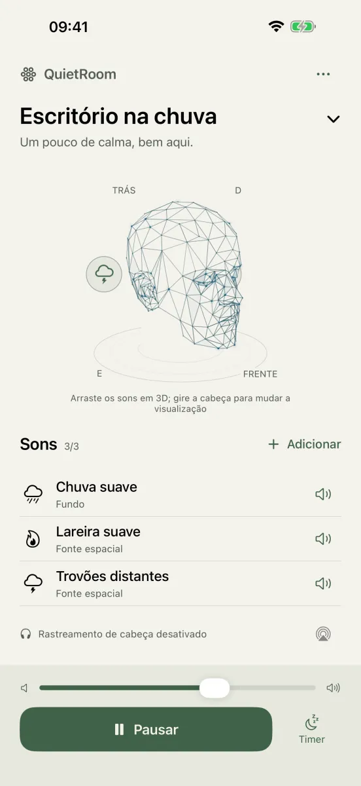
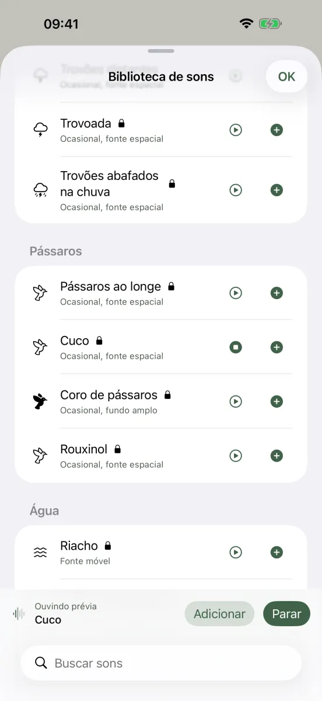
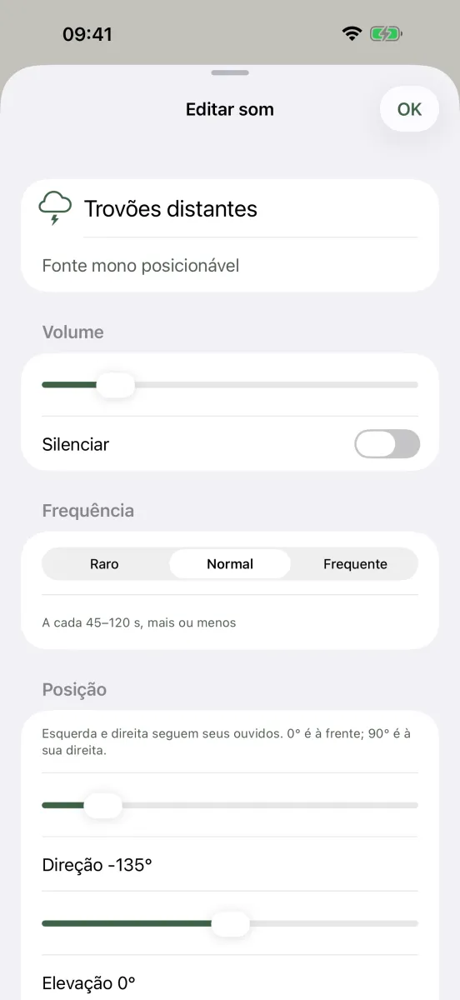
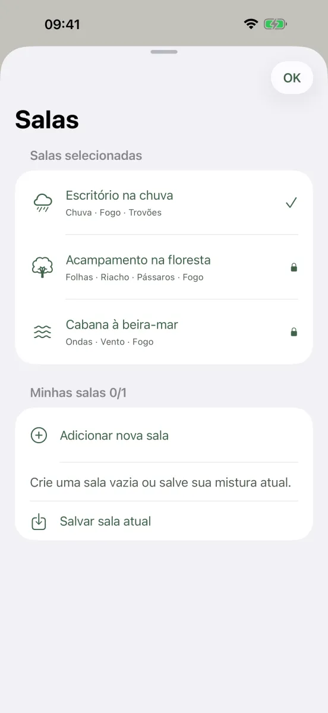

Sons em um espaço real
Arraste cada som ao redor de um ouvinte 3D: à esquerda ou à direita, à frente ou atrás, acima ou abaixo. Ou defina com precisão a direção, a elevação e a distância. Os fundos amplos permanecem estáveis ao seu redor.
Para iPhone · iOS 18 ou posterior
O QuietRoom coloca sons da natureza ao seu redor: chuva na janela à sua esquerda, um riacho à frente, uma fogueira logo atrás. Coloque os fones, toque em Ouvir e ajuste a sala até ela ficar do seu jeito.

Arraste cada som ao redor de um ouvinte 3D: à esquerda ou à direita, à frente ou atrás, acima ou abaixo. Ou defina com precisão a direção, a elevação e a distância. Os fundos amplos permanecem estáveis ao seu redor.
Chuva, trovões, pássaros, riachos, ondas, vento, insetos, passos e fogo. As gravações variam naturalmente, então a sala nunca soa como um loop curto. Ouça a prévia de qualquer som, inclusive os Pro, antes de adicioná-lo.
Trovões, canto de pássaros, gotas e passos surgem de vez em quando. Escolha Raro, Normal ou Frequente para cada um. Os passos também podem soar como uma caminhada contínua.
Comece com Escritório na chuva, Acampamento na floresta ou Cabana à beira-mar, ou parta de uma sala vazia. As alterações são salvas automaticamente; renomeie, duplique ou substitua suas salas quando quiser.
Com fones compatíveis, os sons espaciais ficam no lugar quando você vira a cabeça. Fones comuns continuam oferecendo som espacial fixo.
Sem conta, sem anúncios, sem análises. Os sons vêm incluídos, então ouvir, editar e salvar funcionam sem conexão. O timer encerra com um fade suave.



Compra única · sem assinatura
O preço é exibido pela App Store da sua região.